NDA Project
Private Content
This case study is protected under NDA.
Enter passcode to continue.
Incorrect password. Please try again or email sayali.ux@gmail.com for access.
Need access? Email me at sayali.ux@gmail.com
Return to HomeCase Study · NDA
Tenetic
Designing AI-Assisted Storytelling for Enterprise Sales Teams
Details have been omitted or abstracted in compliance with a non-disclosure agreement. All visuals are reproduced with permission from the client.
Overview
From a one-line hypothesis to
a tool sales teams actually use
Tenetic walked in with one sentence: "AI should be able to write our customers' pitch decks." That was the brief. No flows, no feature list, no clarity on which parts of deck-building the AI should touch and which parts the user should still own.
That kind of brief is normal in AI work right now. Someone in the room is sure the technology works, and nobody is sure what the product looks like. Our job was to figure that out without slowing the build.
"Will the AI actually understand what I need, or just give me a generic deck?"
"Am I going to redo half of it anyway?"
"Can I trust this enough to put it in front of a paying advertiser?"
Every design decision in Tenetic ladders back to one of these three.
What We Were Aiming For
Cut pitch-deck prep from a full morning to under 15 minutes
Keep the rep in control at every commit point
Ground every AI output in real Nielsen, Comscore, and MRI data
Make PowerPoint feel old by comparison
Part 01 of 02 · Discovery
From Hypothesis to Product Shape.
No prior art. No competitor to reference. We built the user's mental model for an AI deck-builder in media sales from scratch.
Four weeks. Three designers, one Creative Director, no separate research team. We owned the interviews, synthesis, persona, and competitive audit. What came out was a filter we used to settle every feature debate after that.
The Decision Filter
Five insights that became
our scoping weapon
We locked these phrases in the first week of synthesis and used them as the test for every feature proposal that followed.
Ease of Use
If it is harder than PowerPoint, no one will use it.
Quick & Efficient
The whole point is saving the morning.
Refine Output
Reps don't ship the first AI draft. This insight shaped the entire interaction model.
Compelling Storytelling
Data without narrative does not close deals.
Accuracy of Data
One wrong rating kills the pitch and the relationship.
Insight 3 ended up shaping the entire interaction model. Once we accepted that nobody would treat the first generation as their final draft, every screen in Implementation became a question of how to make refinement cheap.
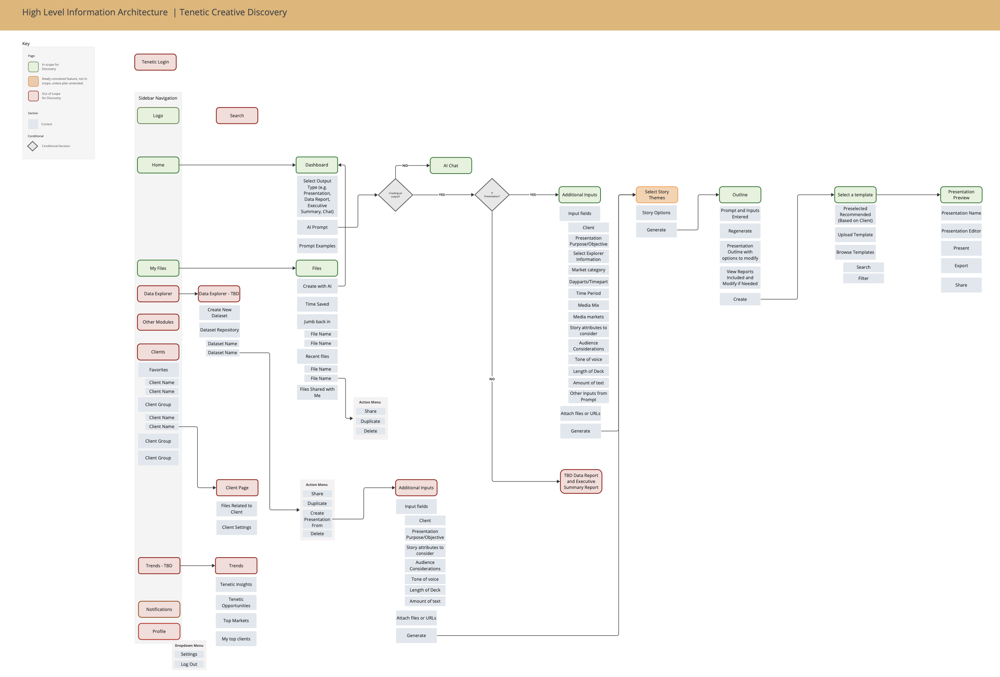
Synthesis: interview data, affinity mapping, high-level insights, design considerations
The Market Gap
Five tools audited.
None of them spoke media-sales fluently.
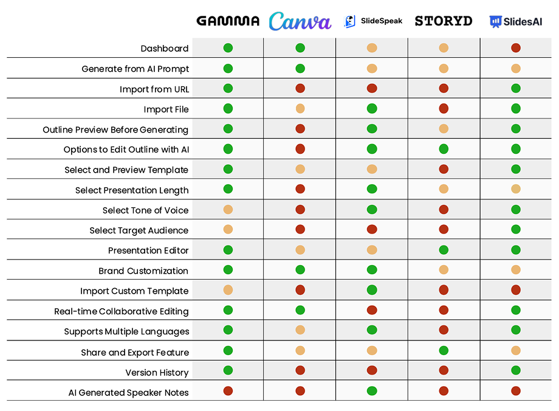
Five AI deck tools audited. None of them spoke media-sales fluently.
Every competitor was a general-purpose deck builder. The wedge for Tenetic was domain depth. We weren't chasing Gamma on "make any deck prettier." We were chasing PowerPoint on "make this deck, the one a CBS local rep ships on a Tuesday morning, with Nielsen numbers and dayparts and a Q2 narrative."
Designing for that meant making the model fluent in something general-purpose tools never had to handle: media-sales schema. Nielsen Scarborough demographics, Comscore reach, MRI psychographics, dayparts, genre splits, target audience. Most of the AI work in Implementation came down to constraining model output to that schema instead of letting it free-form anything.
Primary Persona
Meet Ali
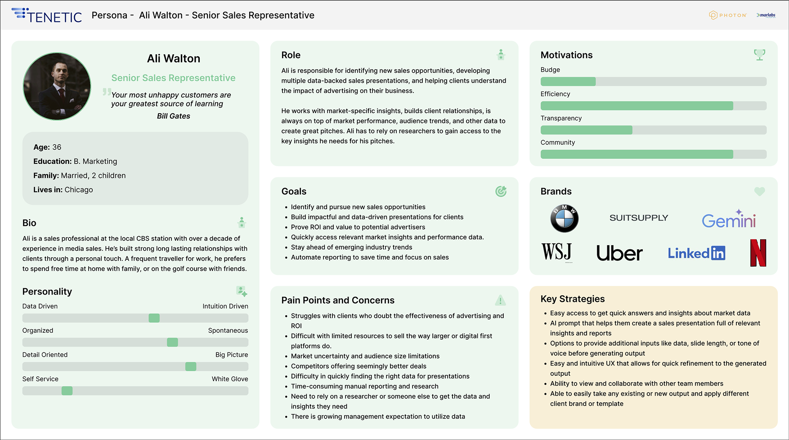
Ali Walton, 36, Senior Sales Rep at a CBS local station in Chicago. Builds 4 to 6 custom decks a week.
Ali is skeptical of AI, not afraid of it. She'll use Tenetic if it makes her faster without making her look stupid in front of a client. She'll abandon it the first time it hallucinates a Nielsen number. Every screen we shipped is for her.
The Journey, Before and After
The wait gap that
kills mornings
The current state has a wait gap that kills mornings. Ali starts a deck, hits the data wall, sends a request to her research analyst Lauren, waits, gets numbers that are close but not quite right, and goes back to Lauren. The new state lets her draft in parallel and enriches the deck when Lauren's data lands.
Old Journey
Ali's morning is gone before she touches a slide.
New Journey
Ali stays in one tool, drafts in parallel, enriches when data lands.
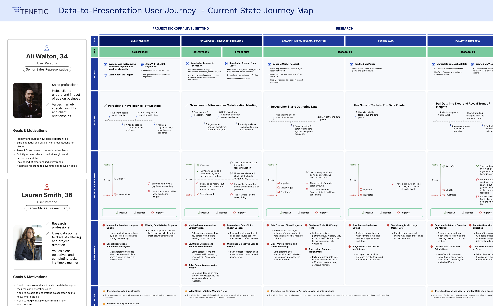
Current state. Ali and Lauren on parallel tracks with the wait gap that creates rework.
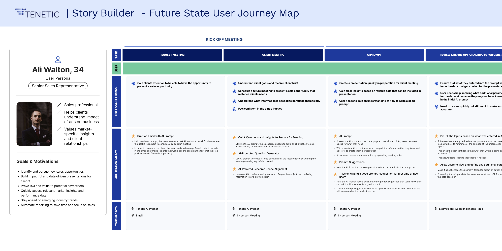
Future state. Ali stays in one tool from kickoff to ship.
The Product in One Sentence
"A flexible, easy-to-use storytelling tool for marketing personas who need compelling media and consumer insights to drive business outcomes efficiently."
Every word in this sentence was argued over. After it landed, we used it as the tiebreaker for every scope debate in the next eight weeks.
The Hero Flow
Six steps. Each one
a commit point.
Each step is a place where the user can back up or move forward. That pattern showed up again and again in the insights.
What Discovery actually shipped: a locked persona, the five-insight filter, the six-step flow, and two features explicitly cut from v1. The client wanted Client Management (a CRM inside the deck builder) and Loyalty & Gamification (streaks, badges, points). We argued both violated Ease of Use and would have pushed Implementation into a second engagement. The insights won.
Part 02 of 02 · Implementation
Designing AI as a Collaborator,
Not a Black Box.
Five questions on every AI screen. If you can't answer them, the screen isn't done.
Four sprints, eight weeks. Three designers in parallel, splitting screens by surface area. Engineering and BAs in every critique. Client UX and UI review at close of each sprint.
What is the model's confidence in this output, and how do we make that legible without making the user a statistician?
Where does the user need to commit, and where do we let them stay reversible?
What does the screen do when the model is wrong, slow, or partially complete?
How do we constrain output to known schemas so hallucination becomes implausible?
How do we earn trust without overselling the model?
When those questions get answered well, the interface feels like a collaborator. When they don't, it feels like a slot machine.
"How might we let users co-author with AI without losing their voice or their trust?"
Style Guide
A semantic palette built
for AI system states
AI products throw more system states at the user than typical SaaS. Generating, regenerating, data-pending, partially complete, error-recoverable. The communication palette had to handle all of them at a glance, because reps work fast and don't read state copy carefully.
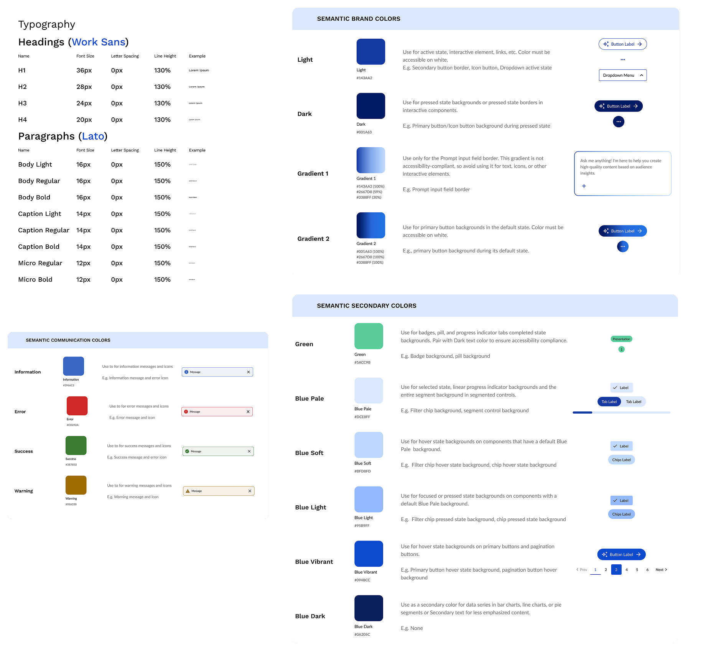
Work Sans for headings, Lato for body. Brand colors Light #5434A2 and Dark #091A43, with a semantic communication palette built specifically for AI system states.
Sprint 01
File Management & Navigation
The shell. Where Ali comes
back to her decks daily.
The shell. Where Ali comes back to her decks, finds last quarter's work, and starts something new.
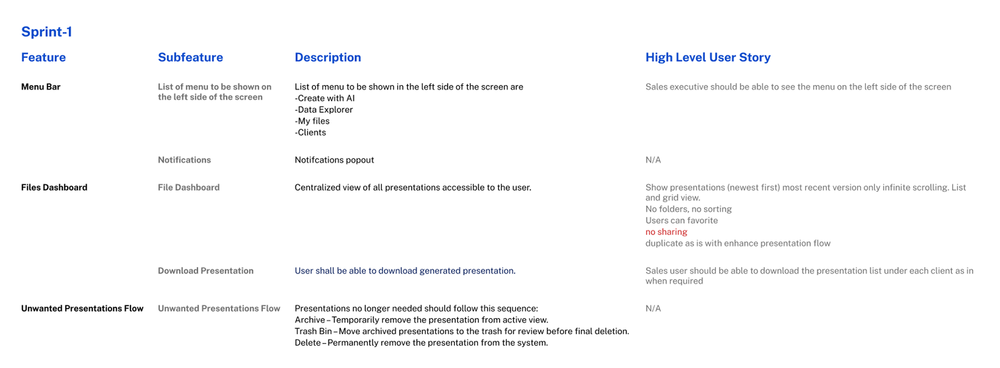
File dashboard, navigation, side nav states.
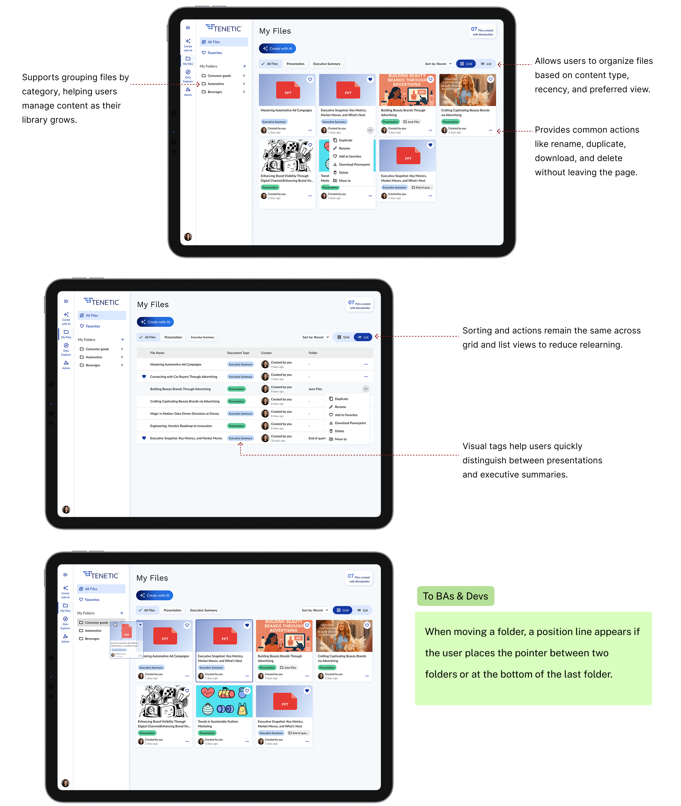
Grid and list view feature parity. Hover and row action menus. Side nav collapse state persists per user.
The decision worth flagging: the client wanted "Create with AI" prompts in every empty state of the dashboard. We argued against it. Empty-state AI nags train users to treat AI as a chore, and the dashboard is supposed to feel like a calm landing pad after a meeting. We shipped a single prominent Create button at the top right and dropped the AI prompts. By the end of Sprint 01 the client agreed it felt cleaner.
Sprint 02
Create with AI
The sprint that defined
every AI pattern downstream
This sprint defined every AI interaction pattern downstream. The client wanted a single text box — prompt in, deck out. We pushed back. In media sales, a prompt like "Q2 local news pitch for a Chicago auto dealer targeting women 25–54 during morning drive" has five embedded variables. Every misread costs Ali twenty minutes. With four to six decks a week, misreads compound.
We shipped two modes in the same flow: conversational for exploration, structured for repeatable high-stakes work.
Conversational refinement. Ali types her prompt. The AI reads the variables back as a structured summary. She confirms or corrects, nothing generates until she commits. Prompt engineering, exposed as UI.
Storybuilder accordion. Six optional sections, collapsed by default. Each maps to a schema-bound input — audiences, dayparts, genres, KPIs — instead of free-text guessing. Schema-binding was the single biggest hallucination reducer we shipped. First version was a long open form; reps bounced on sight. Collapsing by default and making every section optional doubled completion.
One more reason for the confirm step: output anchoring. Once an AI artifact exists, users get attached and won't redo it even when they should. Moving the anchor point upstream onto a summary the user owns makes redirecting cheap.
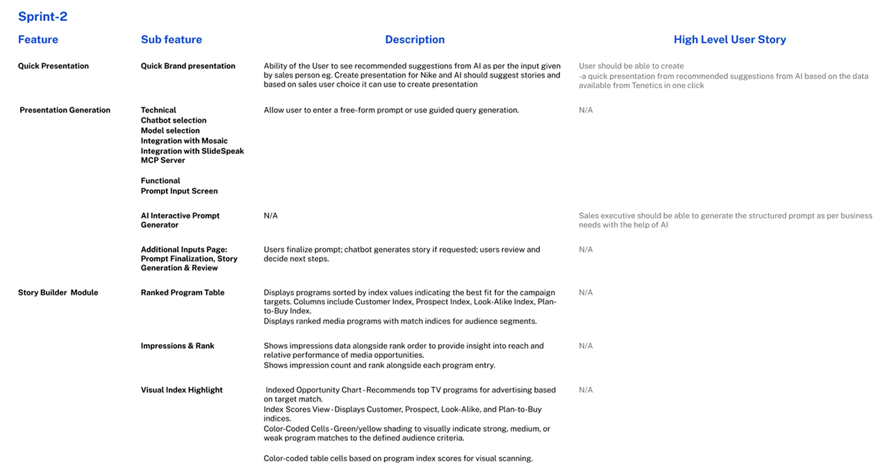
Create with AI. Conversational prompt and Storybuilder accordion inputs.
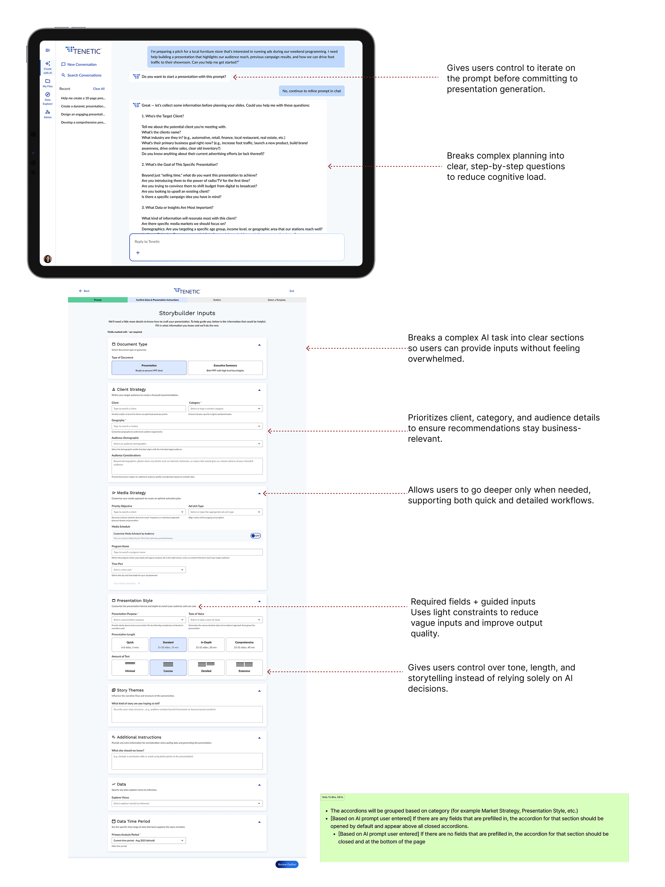
Two distinct interaction modes. Conversational refinement (open) for prompt clarification, structured form (constrained) for repeatable inputs.
Prompt. Preview. Commit. Every AI surface in Tenetic gives the user a chance to redirect before the model commits. We reused this principle in every sprint after this one.
Sprint 03
Template, Generation, Editor
The most-argued screen
was a loading state
The client wanted a spinner. Ten seconds, rotating icon, "Generating your presentation," done. We shipped a transparent four-phase loading state instead: Structuring narrative, Pulling supporting data, Drafting slides, Applying template.
The design move here is perceived performance, which I'd argue is one of the most underrated patterns in AI UX. Real generation latency for a deck of this complexity sits in the 30 to 90 second range. That's long enough that a spinner feels punishing. Breaking the wait into visible phases doesn't shorten it; it makes it legible. Users tolerate longer waits when they can see progress and infer where they are in the work. As a bonus, each phase doubles as a debug surface. When generation fails, the error can name the phase instead of throwing a generic "something went wrong."
Two more details baked into this screen. Cancel exists on the loading state because aborting a bad generation early is cheaper than waiting for it to finish and starting over. Cost matters here, because every regeneration burns API budget the client has to model into their pricing. And the editor itself was built to look like Slides or Keynote on purpose. The novel interactions in Tenetic are about how the deck got there. The editing surface should feel invisible, not innovative. AI tools that try to redesign the slide editor lose users on the first edit.
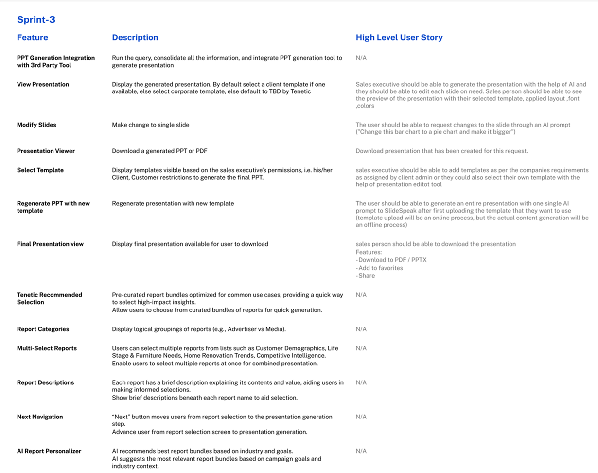
Template selection, transparent generating state, presentation editor.
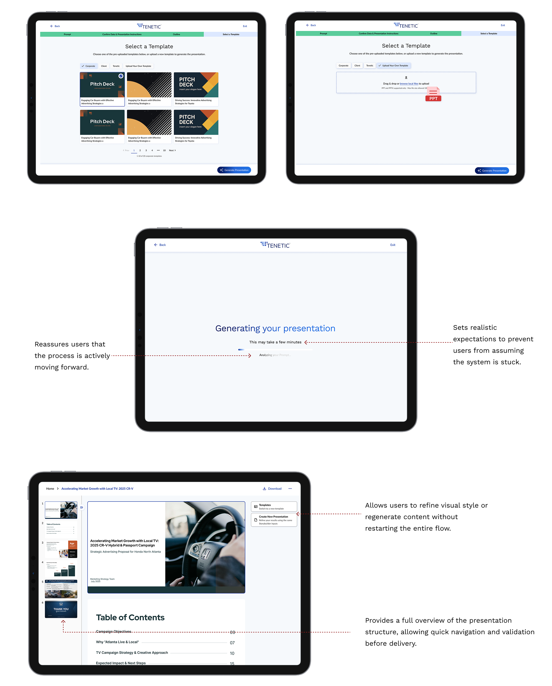
Generation phases visible during loading. Editor inherits familiar slide-by-slide patterns from Slides and Keynote so editing has zero learning curve.
Sprint 04
Slide States & Outline Review
Closing the loop on
Refine Output
This sprint closed the loop on Refine Output and built in two patterns I now treat as defaults for any AI generation product.
Outline review as a cheap commit point. The AI's first artifact isn't a deck — it's an outline. Slide title, one-line summary, data source tag. Ali reviews, reorders, regenerates individual lines, or sends it back with new instructions. Structure locks before any full slide generates. Direction failures cost twenty minutes; execution failures are recoverable in seconds. Negotiate structure first.
Slide states as the AI failure surface. Standard SaaS has two states: loading and loaded. AI products need at least six. Ours: empty, generated, edited, regenerating, data-pending, error-recoverable. Each has a distinct visual treatment so Ali always knows what's her work, what's model-generated, and what needs attention.
Data-pending and HOTL/HITL granularity. Ali drafts before Lauren's research lands. When data arrives, pending slides auto-enrich. The model proposes; Ali accepts, rejects, or edits. Human on the loop continuously, human in the loop at the commit gate.
Inferred vs. user-provided values, marked. Where the model filled in a variable Ali didn't supply, the slide carries a subtle marker. Hover to see what was inferred, override in one click. Without this, reps either over-trust and ship a bad number, or under-trust and redo everything. Data grounding was the single thing that made legal approve the tool for client-facing use.
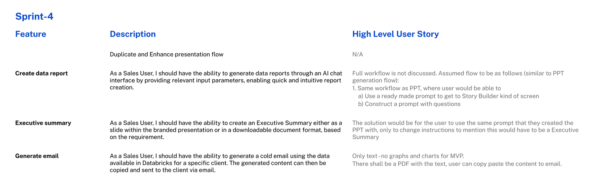
Slide UI states, outline review, AI enrichment when research data lands.
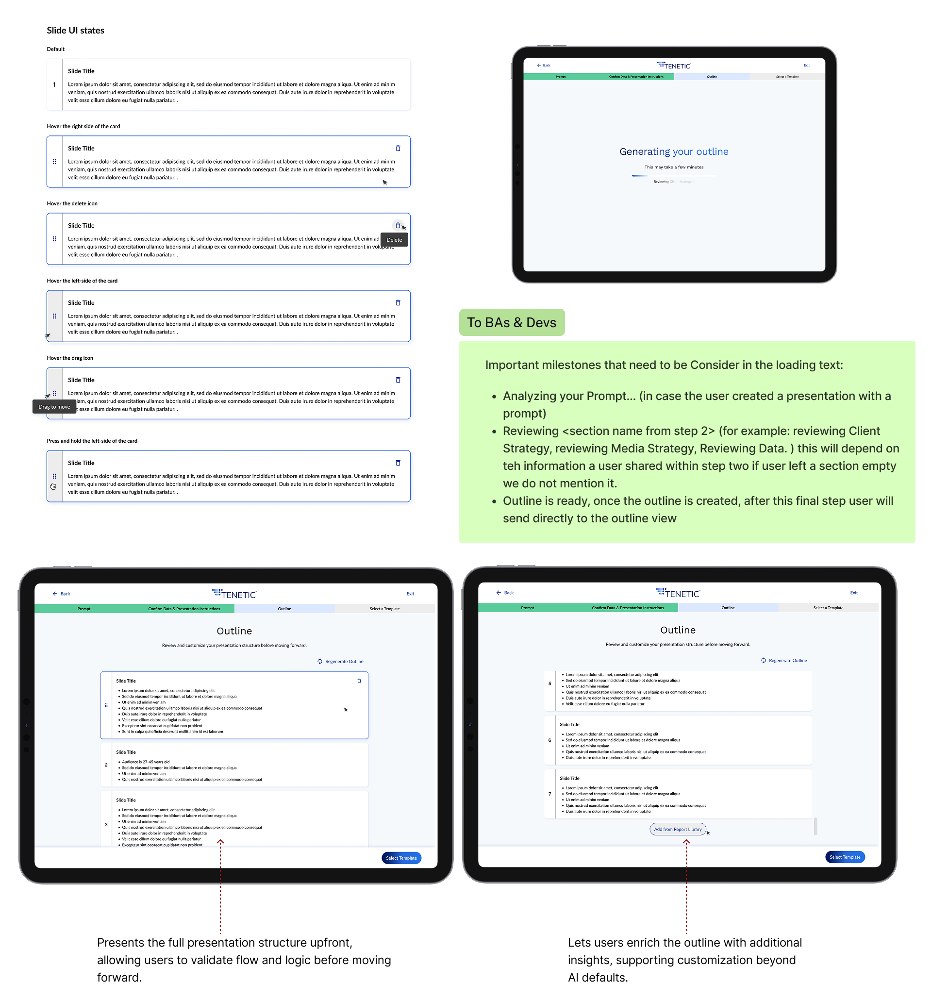
Outline review is the second commit point. The user signs off on deck shape before any full slide generates.
The Patterns We Kept Reaching For
A short list of moves that
became defaults
A short list of moves that became defaults whenever the model touched the interface. Most of them are about lowering the cost of being wrong.
Schema-bound inputs. Constrain the model to known variables instead of free text.
Prompt-as-UI. Read the user's intent back as structured variables before generating.
Two commit points minimum. Prompt confirmation, then outline review, before full generation.
Phased loading over spinners. Visible work beats hidden waiting at any latency above five seconds.
Inferred vs. user-provided markers. Let the user audit only the model's guesses.
Data grounding with citations. Every claim traces to its source.
Targeted regeneration. Slide-level, section-level, and full-deck, in that order of cost.
Data-pending as a first-class state. Async data sources need their own visual treatment.
HITL gates at commit, HOTL during edit. Humans approve final states, not every keystroke.
How the Sprint Actually Ran
Three designers. Parallel lanes.
Embedded engineering.
A typical sprint week looked like this. The three designers scoped together on Monday with the BAs to align on user stories and edge cases. Mid-week we ran internal critiques with the Creative Director. Engineering joined the second-half reviews to flag feasibility before pixels got pushed too far. The client took two passes at the end of every sprint, one UX review focused on flow and decision points, one UI review focused on visual fidelity and brand. Anything unresolved carried into the next sprint as design debt.
Engineering caught data-state edge cases we would have missed on our own. BAs caught business rules that changed how the AI should be allowed to behave. Client review surfaced enterprise constraints (compliance, data governance) we couldn't have known to ask about up front. The AI design patterns we shipped came partly from a research-backed point of view and partly from those review cycles.
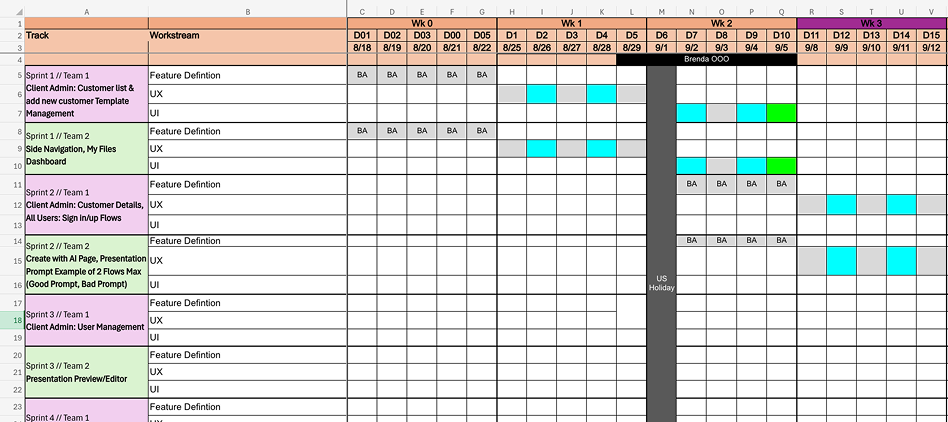
Three-week sprint cadence. Three designers in parallel through every sprint, with embedded engineering and BA participation and client UX and UI review at the close of each cycle.
Conclusion
Two parts. One AI workflow
that earns trust.
Discovery turned a one-sentence client hypothesis into a defendable spec, anchored in user research the design team ran ourselves. Implementation translated that spec into an interface where the model behaves like a collaborator with clear gates.
Designer-led discovery produced a five-insight filter, a primary persona, and a six-step hero flow with explicit commit points.
Every AI surface ships with a control point and a recovery path. Schema-bound inputs to keep hallucination implausible. Phased loading to make latency legible. Data grounding so every number is defensible. HITL at the gates, HOTL between them.
"Designing AI for business is mostly about giving ambiguity a shape the user can push back on, and keeping the cost of being wrong low at every step."
Measure prompt-to-outline conversion against the 15-minute deck target, instrument regenerate-vs-accept rates per slide to find where the model is under-trusted or over-trusted, and explore extending the schema-bound prompt pattern into client-meeting prep flows. Client Management and Loyalty & Gamification stay on the v2 watchlist, conditional on v1 adoption data.
Credits
Photon Interactive
Designed at Photon Interactive, June to September 2025. Three UX designers, one Creative Director, an embedded engineering team, the Tenetic BAs, and a client who learned to trust the design process by the end of Sprint 02.